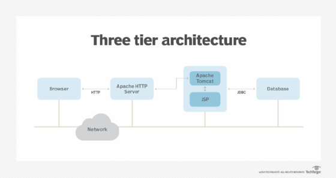

Abusing Intermediary Applications
AJP Proxy• According to Apache, AJP (or JK) is a wire protocol:
https://cwiki.apache.org/confluence/display/TOMCAT/Connectors• It is an optimized version of the HTTP protocol to allow a standalone web server such as Apache to talk to Tomcat.
• Historically, Apache has been much faster than Tomcat at serving static content.
Tomcat provides dynamic content by employing Java-based logic, while the Apache web server's primary purpose is to simply serve up static content such as HTML, images, audio and text
• With an open AJP proxy ports (8009 TCP) during penetration tests, we may be able to use them to access the "hidden" Apache Tomcat Manager behind it.
Although AJP-Proxy is a binary protocol, we can configure our own Nginx or Apache webserver with AJP modules to interact with it and access the underlying application. This way, we can discover administrative panels, applications, and websites that would be otherwise inaccessible.